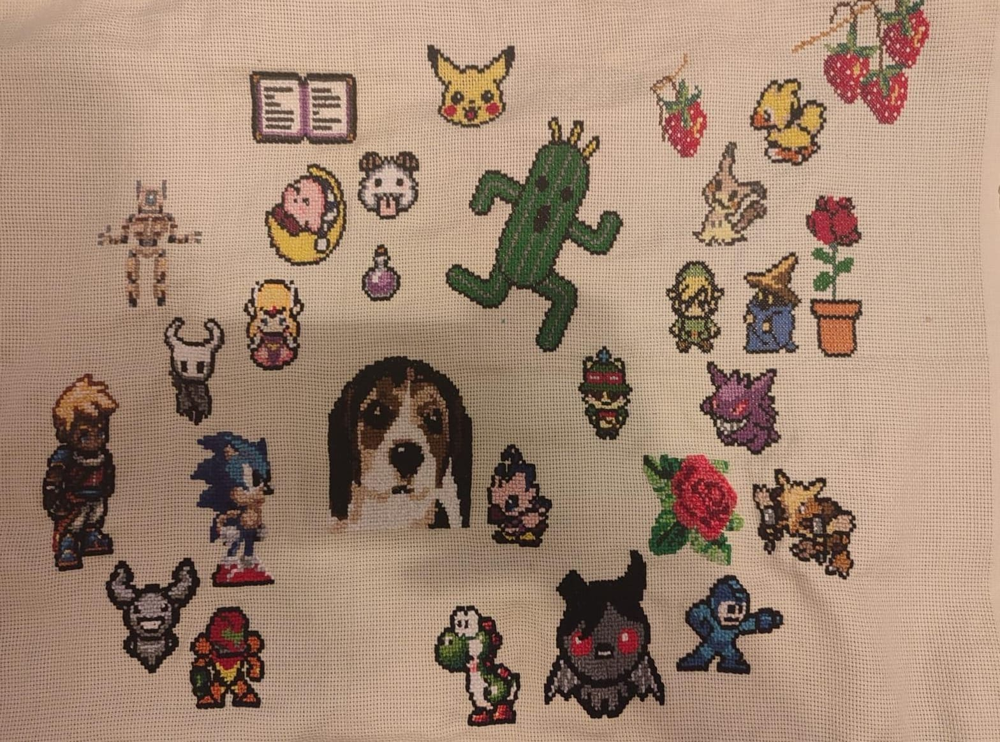
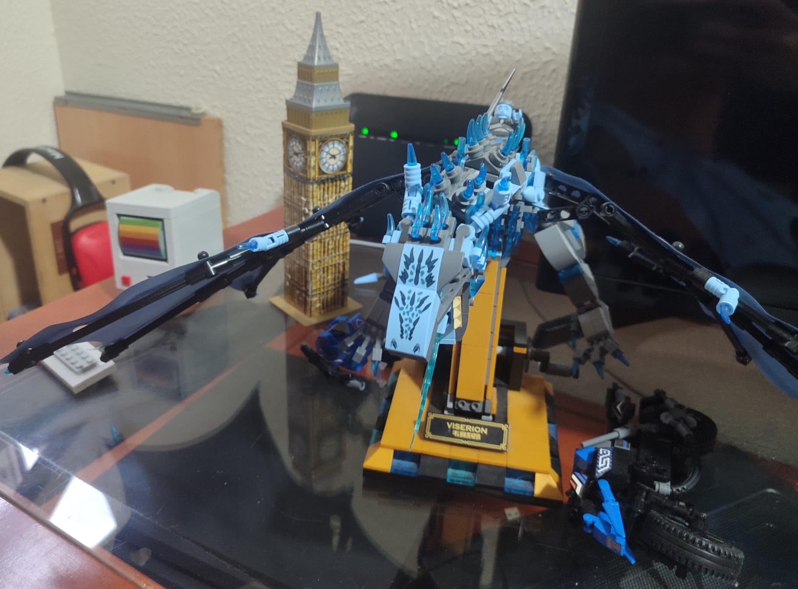
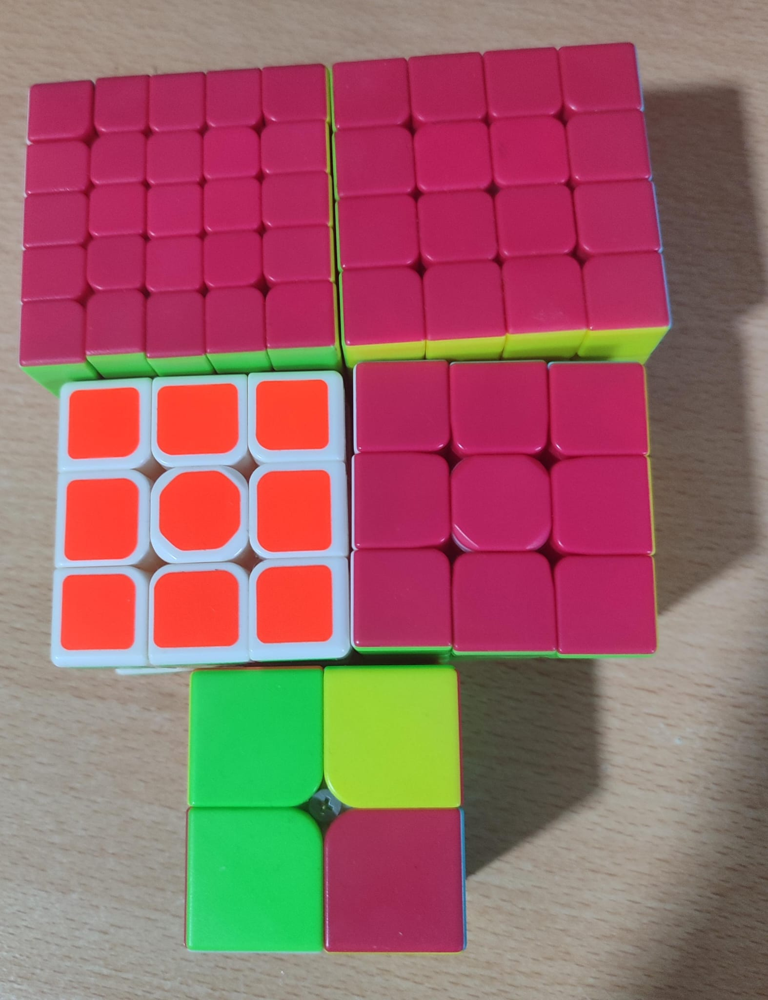

Costura
Hace un par de años estaba buscando un nuevo hobbie y me encontré con la costura y el punto de cruz. Me parece muy interesante como, al final, es una especie de física aplicada. Se que suena fantasioso pero no son mas que hilos soportando ciertas tensiones, hay que buscar la forma correcta de que esa tensión sea la menor posible para cada tipo de rotura y costura que deseemos hacer. Mientras aprendía tipos de costura, empecé a hacer también punto de cruz.
Empecé a hacer punto de cruz como una forma de ocupar mi mente pero rápidamente se conviertió en mi pasatiempo favorito, ya que podía plasmar cualquier cosa que quisiera sin necesidad de tener muchos conocimientos artísticos (en mi búsqueda de hobbies nuevos intenté dibujar y no salio muy bien). Por lo que empecé a plasmar personajes de videojuegos o series que me gustaban. Adjunto fotos de mi primera tela que use para practicar.
Maquetas y puzzles
Cuando era adolescente mi familia me regalo un lego que, al montarlo, simulaba ser un dragón de la famosa seria "Juego de tronos". Tras pasarme 3 días montandolo me di cuenta que habian sido 3 días en los que el tiempo me había pasado volando, en los que estaba tan dentro de la construcción del lego que no podía pensar en otra cosa, ver como las piezas iban encajando exactamente como debían, notar como cada vez quedaban menos piezas y la construcción se estaba completando me dio una satisfacción difícil de explicar, por lo que decidí hacer mas legos y mas maquetas hasta que las que construía tenía que desmontarlas otra vez por no tener sitio donde colocarlas. Adjunto foto de algunas de estas construcciones.
Cubos de rubik
Hace unos años me dio por aprender a hacer cubos de rubik así que empece por hacer el 3x3 llegando hasta hacer un 5x5. Realmente no tiene ni mérito, es sencillamente seguir una serie de pasos e ir completando una serie de figuras hasta llegar a completarlo al 100%. Curiosamente el único que no llegue a hacer es el de 2x2, ya que la manera de construirlo es distinta debido a que son menos dimensiones.
Videojuegos
Durante toda mi vida he jugado a videojuegos. Cuando era pequeño siempre pude jugar cuando quería (porque siempre he sido responsable y no tenía problemas en la escuela, es algo que siempre me dejo mi madre claro). Durante algunos momentos de mi vida me refugie en estos videojuegos, de todo tipo, sentimentales, cómicos e incluso violentos. He crecido jugando a videojuegos y han sido mi lugar seguro en los momentos mas oscuros de mi vida. He jugado a mucho tipo de juegos, creo que cada tipo de juego puede ser para cada momento de la vida.
Lectura
Me encanta leer, he leido desde que era pequeño todo tipo de libros. Comencé con libros de fantasía (de hecho, el libro que me hizo comenzar a leer de forma habitual fue "El valle de los lobos" de Laura Gallego). Con los años mis intereses crecieron, empecé a leer sobre política, ciencia y tecnología, de hecho, empecé a coleccionar libros antiguos de informática, ya que son baratos porque no se pueden utilizar y me parece curioso observar como ha evolucionado la informática y la programación. Empecé a leer sobre los padres de la informática, Alan Turing y Ada Lovelace, como comenzaron con sus carerras y fueron creando sus algoritmos.
Otros
Tengo muchos otros hobbies, me gusta jugar al ajedrez, hacer deporte (cardio sobre todo, me ayuda a liberar tensiones) aunque desde mis problemas médicos no he podido retomarlo. De pequeño practicaba voleyball y competía en natación. También me gusta escribir relatos y novelaas e investigar sobre temas que me interesan. En definitiva, tengo muchos hobbies que, la verdad, algunos llevo años sin practicar, pero que me ayudan a mantener la cordura.